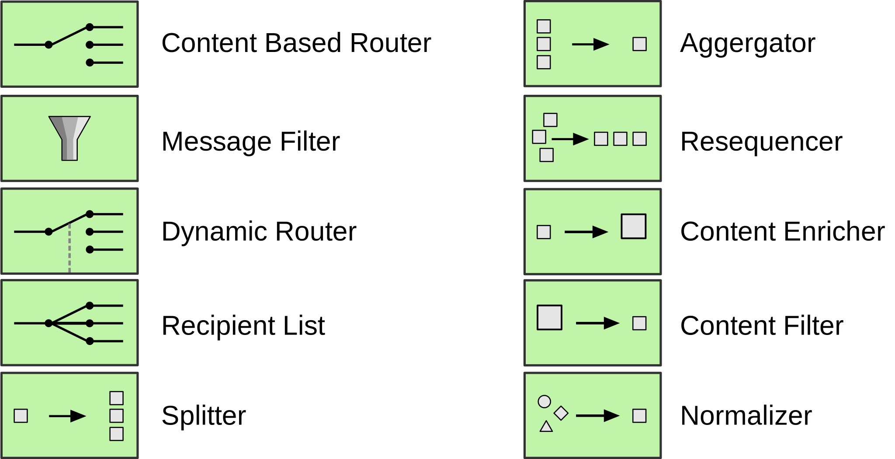

at
Quarkus Insights
Claus Ibsen
@davsclaus@twitter
Zineb Bendhiba
@zbendhiba@mastodon.social
Peter Palaga
@ppalaga@mastodon.social
Image from 1zoom.me
Agenda
- Apache Camel intro (Peter)
- Camel Jbang demo (Claus)
- Camel Quarkus (Peter)
- Camel Quarkus demo (Zineb)

350+ connectors
Filetypes:
|
Protocols:
|
Public/private Clouds:
|
Data & messaging
|
APIs:
|
Misc:
|
Check the full list
Enterprise Integration Patterns (EIP)
https://www.enterpriseintegrationpatterns.com/
Domain Specific Languages (DSL)
| Java | XML |
|
|
Groovy, Scala, Kotlin, YAML, ...
Ways to run Camel
|
||||
 |
||||
 Standalone
Standalone 


code.quarkus.io (with native support)
Camel Quarkus Docs (all)
Seamless integration
with Quarkus
- Live reload
- Dev services (via Testcontainers)
- DBs, Kafka, Mock Mailer, ...
- Continuous testing
Camel Quarkus Demo
github.com/zbendhiba/telegram-kafka/tree/221128-quarkus-insights
Wrap up
- Apache üê™ = an integration toolkit with 350+ connectors
- üöÄüî¨üòç on Quarkus
- https://camel.apache.org
- Chat: https://camel.zulipchat.com
- Mailing list: dev@camel.apache.org
- Follow @ApacheCamel
Feedback and contributions are welcome!